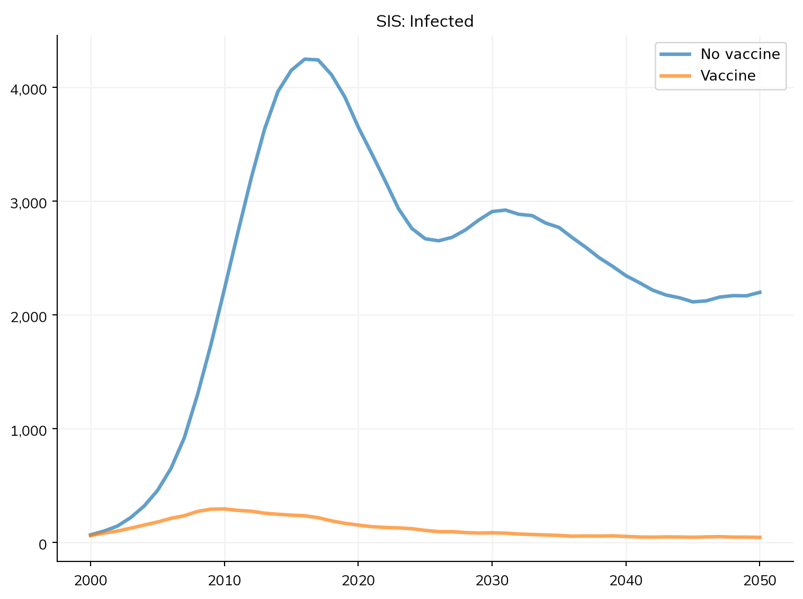
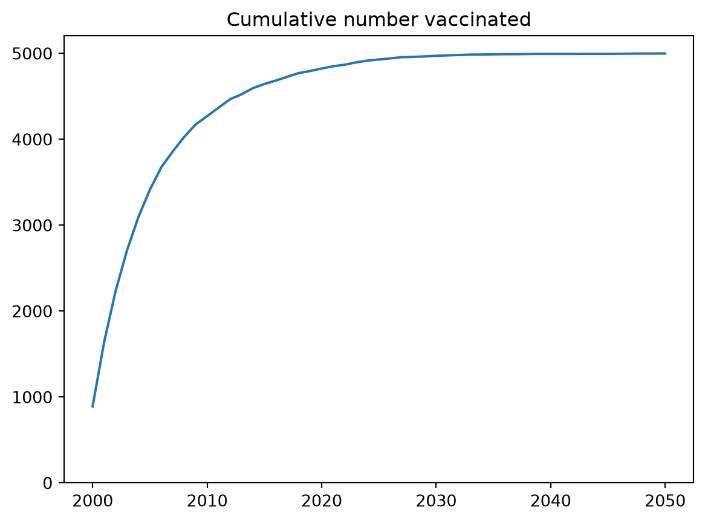

Most of the science in a Starsim model lives in its modules. Diseases, networks, demographics, interventions, analyzers, and connectors are all modules, and they all share the same structure and lifecycle. Once you understand that shared structure, you can write your own module to do almost anything.
This page covers the anatomy of a module, the initialization and execution lifecycle, and a complete worked example. For module-type-specific guidance, see the dedicated pages (Diseases, Networks, Interventions, etc.).
Choosing a base class
Rather than subclassing ss.Module directly, you almost always want to subclass one of the six module types, so that your module is run at the right point in the simulation loop and ends up in the right place on the Sim:
If your module genuinely doesn’t fit any of these, you can subclass ss.Module directly, but this is rare.
Anatomy of a module
A typical module defines some combination of the following. The only part that’s strictly required is a step() method (or, for some base classes, the methods they expect you to override).
Parameters: define_pars() and update_pars()
In __init__(), call super().__init__()first with no arguments, then declare your parameters with their defaults via self.define_pars(), then apply any user-supplied overrides with self.update_pars():
class MyModule(ss.Intervention):def__init__(self, rate=0.1, efficacy=0.9, **kwargs):super().__init__() # Always call first, with no argsself.define_pars( # Declare parameters and defaults rate = ss.peryear(rate), efficacy = efficacy, )self.update_pars(**kwargs) # Apply user overrides; errors on unknown parsreturn
update_pars() raises an error if you try to set a parameter that wasn’t declared in define_pars(), which catches typos early. Rates and durations should use Starsim’s time parameters (e.g. ss.peryear, ss.dur) so they scale correctly with the timestep.
States: define_states()
States are per-agent arrays that persist across timesteps. Declare them with self.define_states(), passing ss.Arr objects such as ss.BoolState, ss.FloatArr, or ss.State:
self.define_states( ss.BoolState('vaccinated', label='Vaccinated'), ss.FloatArr('ti_vaccinated', label='Time of vaccination'),)
Each state becomes an attribute (self.vaccinated) and is automatically connected to the People object. A handy shortcut: every ss.BoolState automatically generates a corresponding n_<name> count result (e.g. n_vaccinated), so you often don’t need to define that result yourself.
Aliases
define_aliases() defines a name that resolves to something else: either the name of another state, or a callable taking the module as its only argument.
self.define_aliases(infectious='infected') # Another name for an existing stateself.define_aliases(asymptomatic=lambdaself: self.infected &~self.symptomatic) # Derived from other states
Any keyword arguments to define_states() are passed to define_aliases(), so states and their aliases can also be defined together:
An alias is only consulted when the attribute isn’t otherwise defined, so a base class can use one to supply a default that a subclass replaces just by defining a state (or another alias) of the same name. This is how ss.Infection treats everyone infected as infectious, while letting a subclass say otherwise; see Infected vs. infectious.
A callable alias behaves like a property: it’s recomputed on each access, and writing to it raises an error rather than silently discarding the write. It doesn’t appear in state_list/state_dict, but it does generate an n_<name> result, since unlike a string alias it’s a derived quantity that isn’t counted anywhere else. Note that a callable alias written as a lambda can’t be saved with plain pickle (sc.save() and ss.MultiSim are fine); use a module-level function, or a property, if that matters to you.
To replace an inherited state or alias rather than add to it, pass overwrite=True. To remove one without replacing it, name it in reset, which takes a name or list of names (or True for all of them); the name is then undefined, so accessing it raises an AttributeError:
self.define_states( ss.BoolState('infectious', label='Infectious'), # Replaces the inherited `infectious` alias reset ='ti_infected', # Removes the inherited state without replacing it overwrite =True,)
Results: define_results()
To record custom outputs, override init_results() and call self.define_results() with ss.Result objects. Results are time series the length of the simulation:
Set scale=True for extensive quantities (counts that should scale with population size) and scale=False for intensive ones (rates, fractions).
The work: step()
step() is called once per timestep and is where the module does its job. Inside it, self.sim gives access to the whole simulation, self.ti is the current timestep index, and self.t.dt is the module’s timestep:
def step(self): disease =self.sim.diseases.sis ... # Do something to the simulationself.results.n_treated[self.ti] = ...return
The module lifecycle
When a Sim initializes and runs, each module passes through these stages:
__init__() — you create the module; parameters and states are declared.
init_pre(sim) — called once during sim.init(). Links the module to the sim and People, initializes the timeline, and calls init_results(). You rarely override this, but if you do, call super().init_pre(sim).
init_post() — called after distributions are initialized; use this for setup that needs initial agent values (e.g. setting initial states).
step() — called every timestep while the sim runs.
finalize() / finalize_results() — called once at the end, e.g. to normalize accumulated results.
A complete example
Here’s a self-contained custom intervention that vaccinates a fraction of susceptible agents each year, conferring partial protection. It illustrates parameters (including a time parameter and a distribution), a state, use of self.sim and self.t.dt inside step(), and the automatically generated n_vaccinated result:
import starsim as ssss.options(jupyter=True)class SimpleVaccination(ss.Intervention):""" Vaccinate a fraction of susceptible agents each year """def__init__(self, rate=0.1, efficacy=0.9, **kwargs):super().__init__()self.define_pars( rate = ss.peryear(rate), # Fraction of susceptibles vaccinated per year efficacy = efficacy, # Relative reduction in susceptibility )self.update_pars(**kwargs)self.define_states( ss.BoolState('vaccinated', label='Vaccinated'), )self.coverage = ss.bernoulli(p=0) # Distribution for selecting who gets vaccinatedreturndef step(self): sis =self.sim.diseases.sis# Eligible agents: susceptible and not yet vaccinated eligible = (sis.susceptible &~self.vaccinated).uids# Select a fraction of them, scaled by the timestepself.coverage.set(p=self.pars.rate *self.t.dt) chosen =self.coverage.filter(eligible)# Vaccinate them and reduce their susceptibilityself.vaccinated[chosen] =True sis.rel_sus[chosen] *= (1-self.pars.efficacy)return# Compare a baseline against the vaccination scenariopars =dict(n_agents=5000, diseases='sis', networks='random', verbose=0)s1 = ss.Sim(pars, label='No vaccine')s2 = ss.Sim(pars, label='Vaccine', interventions=SimpleVaccination(rate=0.2))msim = ss.parallel(s1, s2)msim.plot('sis_n_infected')
Figure(768x576)

Because we defined vaccinated as a ss.BoolState, the count is automatically available as a result, so we can plot the vaccination rollout without any extra code:
import matplotlib.pyplot as pltres = s2.results.simplevaccinationplt.figure()plt.plot(res.timevec, res.n_vaccinated)plt.title('Cumulative number vaccinated')plt.ylim(bottom=0)plt.show()

Modules from functions
For quick, one-off logic you don’t need a full class. Any module type can be created from a plain function that takes the sim as its only argument: the function becomes the module’s step() and is called once per timestep. This is the mechanism behind “function-based” interventions and analyzers.
The easiest way is to pass the function directly — Starsim converts it to the right module type automatically, using the function’s name as the module name:
import starsim as ssss.options(jupyter=True)def knockdown(sim):""" Halve transmission for one year starting in 2015 """if sim.now ==2015: sim.diseases.sis.rel_trans[:] *=0.5returnsim = ss.Sim(diseases='sis', networks='random', interventions=knockdown, verbose=0)sim.run()print(type(sim.interventions[0]).__name__) # Interventionprint(sim.interventions[0].name) # 'knockdown'
Intervention
knockdown
A function passed to interventions= becomes an ss.Intervention, one passed to analyzers= becomes an ss.Analyzer, and one passed to custom= (or modules=) becomes a bare ss.Module. To build the module explicitly — for example to set a custom name, or to construct it before adding it to a sim — call from_func() on the class you want:
intv = ss.Intervention.from_func(knockdown) # An Intervention whose step() calls knockdown(sim)ana = ss.Analyzer.from_func(my_recorder) # An Analyzersim = ss.Sim(diseases='sis', networks='random', interventions=intv)
Note that the function is called on every timestep, so it must do its own time gating (e.g. if sim.now == 2015:). Function modules are deliberately minimal: they have no parameters, states, or results of their own. As soon as you need per-agent state (define_states()), tracked results (define_results()), or configurable parameters (define_pars()), write a proper subclass instead — see the Interventions and Analyzers pages for the function-vs-class tradeoff.
Tips
Always call super().__init__() (with no arguments) as the first line of your __init__(), and super().init_results() / super().step() etc. if you override those methods on a base class that already implements them.
Use self.sim, not a stored reference, to reach the rest of the simulation — modules are linked to the sim during init_pre(). Prefer the module-level shortcuts self.ti, self.now, and self.t.dt over self.sim.t.ti etc.
Track per-agent data with define_states() (e.g. ss.BoolState('vaccinated')), never as a plain Python attribute or a hand-built array. Only states grow with births, reset on death, and appear automatically in results.
For interventions, start and stop are reserved timeline keywords, but step() is not automatically gated on them — if you want time-limited behavior, check the time explicitly at the top of step() (e.g. if self.now < self.pars.start: return), and avoid reusing start/stop as names for unrelated parameters.